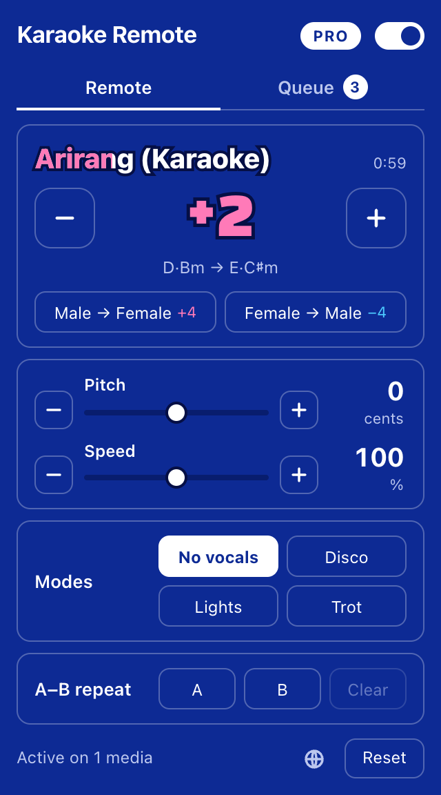
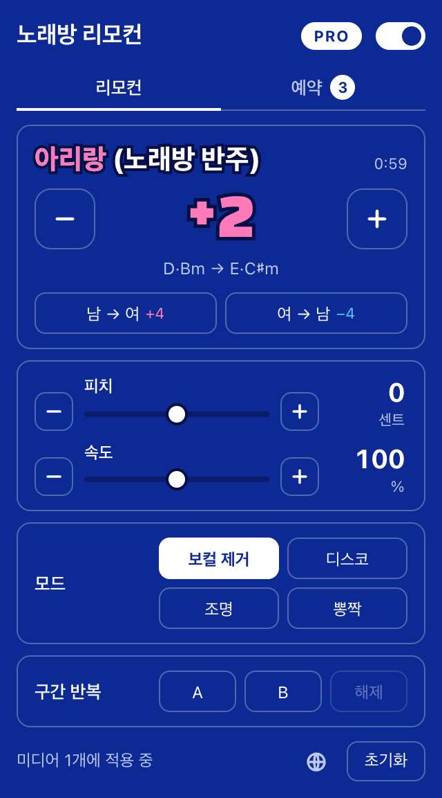
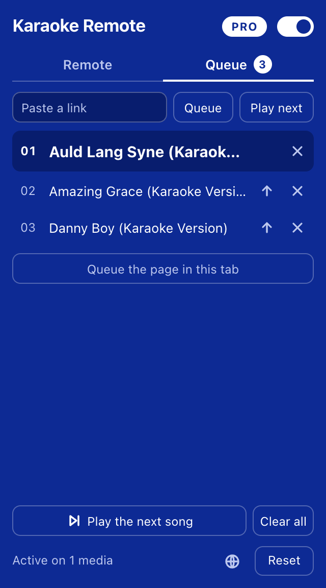
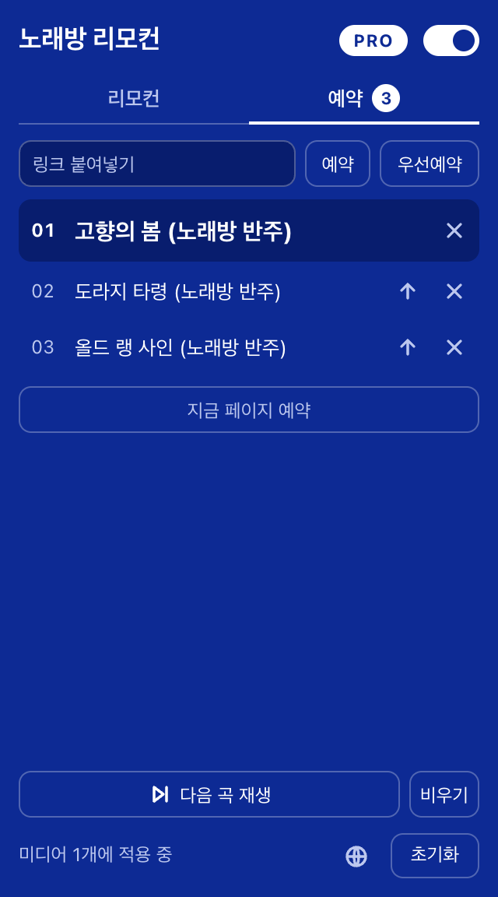

Karaoke Remote
A karaoke machine's remote for any browser tab. Change the key, pitch and speed of whatever is playing, a karaoke video or the original song, while you sing.
A Chrome extension for desktop. Its Chrome Web Store listing is on the way.
Free no account, no time limit
- Key up or down by as much as 12 semitones, one press at a time
- Male ↔ female key presets, 4 semitones either way
- Fine pitch in cents, for a recording that is slightly off
- Speed from 50% to 200% without changing the pitch
- Settings kept separately for each tab
노래방 리모컨
어느 탭에서든 쓰는 노래방 리모컨. 노래방 반주 영상이든 원곡이든, 재생 중인 소리의 키와 피치, 속도를 부르면서 바꿉니다.
데스크톱 Chrome 확장 프로그램입니다. Chrome 웹 스토어 등록을 준비하고 있습니다.
무료 가입 없이, 기간 제한 없이
- 키를 한 번에 반음씩, 위아래로 12반음까지
- 남 ↔ 여 키 변환, 위아래로 4반음
- 음정이 살짝 어긋난 음원을 맞추는 센트 단위 피치
- 음정은 그대로 두고 속도만 50%에서 200%까지
- 탭마다 따로 기억하는 설정




Pro a paid licence
- Song queue: line up links, and the tab moves to the next song when one ends
- Vocal removal, for singing over the original recording
- The key the song is in, and the key you have moved it to
- Disco and trot beats that follow the song's tempo
- Lights around the page that pulse on the beat
- A–B repeat, for practising one passage
Pro 유료 라이선스
- 곡 예약: 링크를 줄 세워 두면 한 곡이 끝날 때 탭이 다음 곡으로 넘어갑니다
- 원곡에 맞춰 부를 때 쓰는 보컬 제거
- 곡의 원래 키와 바꾼 키 표시
- 곡의 템포를 따라가는 디스코 비트와 뽕짝 비트
- 박자에 맞춰 페이지 가장자리에서 깜빡이는 조명
- 한 구간을 연습하는 구간 반복
Everything stays in your browser
The sound is changed on your own device as it plays. Nothing is recorded, uploaded or sent anywhere, and there are no ads or analytics. The extension talks to a server only to check a Pro licence and to look up the title of a link you queue.
Where it works
On pages that play ordinary video or audio in Chrome, YouTube among them. A few sites do not let their sound be processed; on those, speed still works and the popup says so.
모든 처리는 브라우저 안에서
소리는 재생되는 동안 사용자의 기기에서 바뀝니다. 녹음하거나 올리거나 어디로도 보내지 않으며, 광고와 분석 도구가 없습니다. 확장 프로그램이 서버와 통신하는 경우는 Pro 라이선스를 확인할 때와 예약한 링크의 제목을 가져올 때뿐입니다.
쓸 수 있는 곳
YouTube를 비롯해 Chrome에서 일반적인 영상이나 오디오를 재생하는 페이지에서 동작합니다. 소리 처리를 허용하지 않는 일부 사이트에서는 속도 조절만 되며, 팝업이 이를 알려 줍니다.